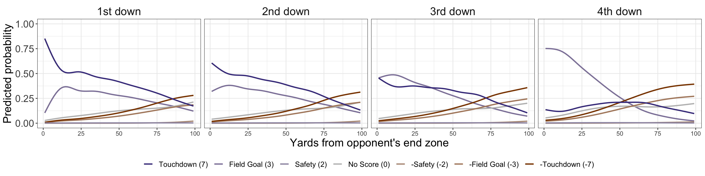
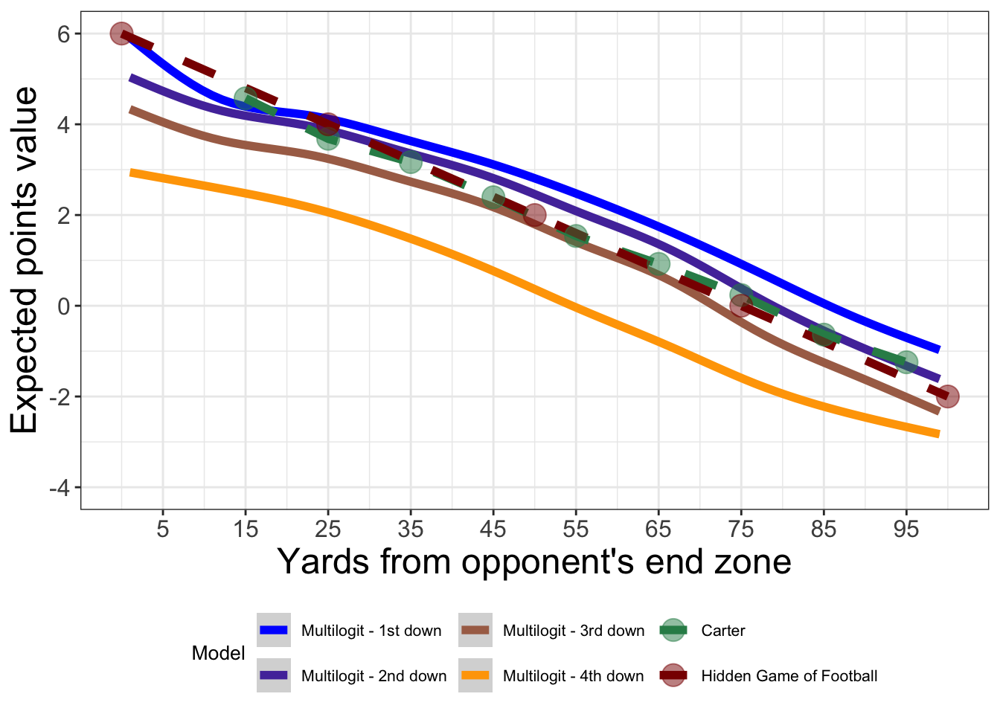

Lecture 4: Multinomial Logistic Regression for Expected Points
Introduction
The goal of this demo is to introduce how to fit and evaluate a multinomial logistic regression model in the context of modeling the next scoring event in American football. For this demo, we’ll use an example dataset of NFL play-by-play data from 2013 to 2023. This is initialized with a column including the next score in the half for each play (you can find the script on Canvas, which creates the dataset using nflreadr).
The following code chunk reads in the relevant NFL play-by-play dataset (assuming it is in the correct directory) and performs some initial pre-processing relevant for the expected points model:
library(tidyverse)nfl_ep_model_data <-read_rds(here::here("data/model_nfl_pbp_data.rds"))nfl_ep_model_data <- nfl_ep_model_data |># Make the No_Score level the reference level:mutate(Next_Score_Half =fct_relevel(Next_Score_Half, "No_Score"),# log transform of yards to go and indicator for two minute warning:log_ydstogo =log(ydstogo),# Changing down into a factor variable: down =factor(down))nfl_ep_model_data
In order to fit a multinomial logistic regression model in R, the easiest way is to use the nnet package with the multinom function. The following code chunk fits this model to the full dataset with the Next_Score_Half variable as the response with the context variables as the predictors:
library(nnet)init_ep_model <-multinom(Next_Score_Half ~ half_seconds_remaining + yardline_100 + down + log_ydstogo + log_ydstogo * down + yardline_100 * down, data = nfl_ep_model_data, maxit =300)
# weights: 98 (78 variable)
initial value 822933.185674
iter 10 value 646448.661731
iter 20 value 628562.786640
iter 30 value 616585.530613
iter 40 value 600078.459583
iter 50 value 597249.917485
iter 60 value 568326.053579
iter 70 value 561806.646221
iter 80 value 556313.688644
iter 90 value 555528.854290
iter 100 value 555518.276158
final value 555518.120956
converged
Note the use of maxit = 300 is to provide a sufficient number of steps for model fitting. You’ll notice the printing of iteration steps here because this package is actually the simplest package used for fitting neural networks in R.
Notice what happens when we use the summary() function on this model (it takes some time to run):
You see the usual type of output (coefficients, standard errors, deviance, AIC), but we see coefficient estimates for each next score outcome (except for the reference level No_Score).
Alternatively, it can be helpful to visualize the implied relationships between the various features and the outcome probabilities using visualization techniques. In order to do this, we first need to get the fitted probabilities for each scoring event. For a nnet multinomial logistic regression model, we can use the predict() function with type = "probs" as an input to return the matrix of probabilities for each event:
next_score_probs <-predict(init_ep_model, newdata = nfl_ep_model_data, type ="probs") |>as_tibble()next_score_probs
The following code chunk joins these probabilities to the original dataset, and creates a visual that displays a smooth regression (we’ll cover this later) of the model’s probabilities as a function of certain inputs. Note: these visuals do not represent the exact relationship, but rather just a summary of the relationships.This code was used to generate the figures in my paper.
# Create the facetted version for each events probability based on down:nfl_ep_model_data |># Join the probs:bind_cols(next_score_probs) |># Only grab a subset of columns dplyr::select(yardline_100, down, No_Score:Touchdown) |>pivot_longer(No_Score:Touchdown,# Name of the column for the outcomesnames_to ="next_score_type",# Name of the column for the predicted probabilitiesvalues_to ="pred_prob") |># Create a score value column to use for the color legendmutate(event_value =case_when( next_score_type =="No_Score"~0, next_score_type =="Touchdown"~7, next_score_type =="Field_Goal"~3, next_score_type =="Safety"~2, next_score_type =="Opp_Field_Goal"~-3, next_score_type =="Opp_Safety"~-2,TRUE~-7),# Label for downdown_label =case_when( down ==1~"1st down", down ==2~"2nd down", down ==3~"3rd down",TRUE~"4th down")) |>ggplot(aes(x = yardline_100, y = pred_prob, color = event_value,group = next_score_type)) +geom_smooth(se =FALSE) +ylim(0,1) +facet_wrap(~down_label, ncol =4) +theme_bw() +labs(x ="Yards from opponent's end zone", y ="Predicted probability") +scale_color_gradient2(low ="darkorange4", mid ="gray",high ="darkslateblue", breaks =c(-7, -3, -2, 0, 2, 3, 7),labels=c(" -Touchdown (-7) ", " -Field Goal (-3) "," -Safety (-2) ", " No Score (0) "," Safety (2) ", " Field Goal (3) ", " Touchdown (7) "),guide =guide_legend(title =NULL, ncol =7,reverse =TRUE,override.aes =list(size =5))) +theme(legend.background =element_rect(fill ="white"),axis.title =element_text(size =18),axis.text.y =element_text(size =16),axis.text.x =element_text(size =10),legend.position ="bottom",strip.background =element_blank(),strip.text =element_text(size =18),legend.text =element_text(size =12))
`geom_smooth()` using method = 'gam' and formula = 'y ~ s(x, bs = "cs")'

We can also create a figure that summarizes the relationships between different features with the actual variable of interest: expected points. The first step is to compute the expected points, which we can do using a simple line of code that weights each probability with a point value for the outcome:
And then use a similar approach as before, including historical models, to display the implied relationships:
# Expected points relationships, for the historical models:# First the Carter model:carter_data <-tibble("yardline_100"=c(95, 85, 75, 65, 55, 45, 35, 25, 15, 5),"ep"=c(-1.245, -.637, .236, .923, 1.538, 2.392, 3.167, 3.681, 4.572, 6.041)) |>mutate(model ="Carter")# and Hidden Game of Football model:hgf_data <-tibble("yardline_100"=c(100, 75, 50, 25, 0),"ep"=c(-2, 0, 2, 4, 6)) |>mutate(model ="Hidden Game of Football")# Display our model's results by down and then compare to the historical# models from Carter and the Hidden Game of Football:nfl_ep_model_data |>bind_cols(next_score_probs) |># Only grab a subset of columns dplyr::select(yardline_100, down, ep) |>ggplot(aes(x = yardline_100, y = ep,color =as.factor(down))) +geom_smooth(size =2) +labs(x ="Yards from opponent's end zone",y ="Expected points value",color ="Model") +theme_bw() +scale_y_continuous(limits =c(-4, 6),breaks =seq(-4, 6, 2)) +geom_line(data =bind_rows(carter_data, hgf_data),aes(x = yardline_100, y = ep, color = model),size =2, linetype ="dashed") +geom_point(data =bind_rows(carter_data, hgf_data),aes(x = yardline_100, y = ep, color = model),size =5, alpha =0.5) +scale_x_continuous(breaks =seq(from =5, to =95, by =10)) +scale_color_manual(values =c("#0000FF","#5537AA","#AA6E55","#FFA500","seagreen4","darkred"),labels =c("Multilogit - 1st down","Multilogit - 2nd down","Multilogit - 3rd down","Multilogit - 4th down","Carter","Hidden Game of Football")) +theme(axis.title =element_text(size =18),axis.text =element_text(size =12),legend.text =element_text(size =8),legend.title =element_text(size =10),legend.position ="bottom")
Warning: Using `size` aesthetic for lines was deprecated in ggplot2 3.4.0.
ℹ Please use `linewidth` instead.
`geom_smooth()` using method = 'gam' and formula = 'y ~ s(x, bs = "cs")'
Warning: Removed 2329 rows containing non-finite outside the scale range
(`stat_smooth()`).
Warning: Removed 1 row containing missing values or values outside the scale range
(`geom_line()`).
Warning: Removed 1 row containing missing values or values outside the scale range
(`geom_point()`).

Cross-validation calibration
Since our goal relies on using the model’s probability estimates, we can evaluate the model similar to the expected goals model: via out-of-sample calibration. The notable difference is that we need to assess how well the model is calibrated for each scoring event. The following code generates the leave-one-year-out cross-validation predictions for each play in the dataset (note that the model fitting steps are printed for each season fold):
init_loso_cv_preds <-map_dfr(unique(nfl_ep_model_data$season), function(x) {# Separate test and training data: test_data <- nfl_ep_model_data |>filter(season == x) train_data <- nfl_ep_model_data |>filter(season != x)# Fit multinomial logistic regression model: ep_model <-multinom(Next_Score_Half ~ half_seconds_remaining + yardline_100 + down + log_ydstogo + log_ydstogo * down + yardline_100 * down, data = train_data, maxit =300)# Return dataset of class probabilities:predict(ep_model, newdata = test_data, type ="probs") |>as_tibble() |>mutate(Next_Score_Half = test_data$Next_Score_Half,season = x) })
# weights: 98 (78 variable)
initial value 747749.055246
iter 10 value 581440.350658
iter 20 value 566007.216610
iter 30 value 553092.654185
iter 40 value 538119.354133
iter 50 value 536424.391744
iter 60 value 520828.612116
iter 70 value 511272.480459
iter 80 value 505399.169176
iter 90 value 504210.861998
iter 100 value 504171.076545
iter 110 value 504167.970371
iter 120 value 504167.510171
final value 504167.490166
converged
# weights: 98 (78 variable)
initial value 748467.096091
iter 10 value 582511.589203
iter 20 value 567340.012597
iter 30 value 553488.233716
iter 40 value 537655.594760
iter 50 value 534824.876335
iter 60 value 525502.198924
iter 70 value 512996.713239
iter 80 value 506475.015847
iter 90 value 504965.487881
iter 100 value 504938.379836
final value 504937.826673
converged
# weights: 98 (78 variable)
initial value 747873.593495
iter 10 value 581271.333157
iter 20 value 565846.033579
iter 30 value 553897.370602
iter 40 value 536428.400172
iter 50 value 533324.447646
iter 60 value 519623.381518
iter 70 value 510091.467079
iter 80 value 505678.094433
iter 90 value 504541.138811
iter 100 value 504525.471455
final value 504525.424807
converged
# weights: 98 (78 variable)
initial value 748525.473395
iter 10 value 584430.991679
iter 20 value 569735.869879
iter 30 value 558267.533816
iter 40 value 545227.965954
iter 50 value 542097.115990
iter 60 value 534837.983927
iter 70 value 514739.234466
iter 80 value 507703.178044
iter 90 value 505555.625847
iter 100 value 505532.168333
final value 505532.108496
converged
# weights: 98 (78 variable)
initial value 749165.677834
iter 10 value 586127.439746
iter 20 value 569455.903919
iter 30 value 555673.870004
iter 40 value 537108.662513
iter 50 value 535388.738604
iter 60 value 525520.820192
iter 70 value 510458.157722
iter 80 value 505818.284259
iter 90 value 505018.434102
iter 100 value 505008.890377
final value 505008.882666
converged
# weights: 98 (78 variable)
initial value 750086.093335
iter 10 value 585080.586820
iter 20 value 570595.228537
iter 30 value 555605.385864
iter 40 value 543202.950882
iter 50 value 541039.078280
iter 60 value 527670.700071
iter 70 value 516882.317084
iter 80 value 510327.264273
iter 90 value 507410.311047
iter 100 value 507383.469803
iter 110 value 507382.051725
final value 507381.972455
converged
# weights: 98 (78 variable)
initial value 749346.647478
iter 10 value 586291.599094
iter 20 value 571463.633794
iter 30 value 555251.569408
iter 40 value 540714.413545
iter 50 value 538208.068421
iter 60 value 524922.778076
iter 70 value 511749.141809
iter 80 value 506515.736547
iter 90 value 505678.465320
iter 100 value 505662.467396
final value 505662.424972
converged
# weights: 98 (78 variable)
initial value 749852.584117
iter 10 value 585091.048570
iter 20 value 570487.939148
iter 30 value 554224.337618
iter 40 value 545207.608450
iter 50 value 542998.382583
iter 60 value 523574.947287
iter 70 value 512352.949701
iter 80 value 507690.704984
iter 90 value 506457.363312
iter 100 value 506441.642486
final value 506441.579198
converged
# weights: 98 (78 variable)
initial value 745867.360132
iter 10 value 581916.027979
iter 20 value 566655.115894
iter 30 value 554775.921190
iter 40 value 536693.143905
iter 50 value 534378.950264
iter 60 value 527881.563685
iter 70 value 513033.555210
iter 80 value 505528.391065
iter 90 value 504279.763183
iter 100 value 504257.414205
final value 504257.309441
converged
# weights: 98 (78 variable)
initial value 746513.402301
iter 10 value 585896.386604
iter 20 value 571358.916426
iter 30 value 556119.424347
iter 40 value 541842.753103
iter 50 value 539199.324648
iter 60 value 521593.725464
iter 70 value 510590.617369
iter 80 value 504547.807280
iter 90 value 503510.806223
iter 100 value 503498.307119
final value 503498.009677
converged
# weights: 98 (78 variable)
initial value 745884.873323
iter 10 value 582559.463464
iter 20 value 567597.676369
iter 30 value 553086.905300
iter 40 value 539643.354316
iter 50 value 537190.694757
iter 60 value 530614.346149
iter 70 value 516141.509588
iter 80 value 506361.234224
iter 90 value 503662.111159
iter 100 value 503639.873014
final value 503639.857722
converged
We can then generate the calibration summary as before, with the caveat we need to do this for each outcome probability. Since the above code returns a dataset with a column for each outcome separately, we need to pivot the dataset from wide to long so that there is a row for each play-outcome combination. We can do this using the useful pivot_longer() function as shown below, with the same summary steps as before:
ep_cv_loso_calibration_results <- init_loso_cv_preds |># First specify which columns to turn into rowspivot_longer(No_Score:Touchdown,# Name of the column for the outcomesnames_to ="next_score_type",# Name of the column for the predicted probabilitiesvalues_to ="pred_prob") |># And then the same steps as before but now with grouping by score outcome:mutate(bin_pred_prob =round(pred_prob /0.05) * .05) |>group_by(next_score_type, bin_pred_prob) |>summarize(n_plays =n(), n_scoring_event =length(which(Next_Score_Half == next_score_type)),bin_actual_prob = n_scoring_event / n_plays,bin_se =sqrt((bin_actual_prob * (1- bin_actual_prob)) / n_plays),.groups ="drop") |>mutate(bin_upper =pmin(bin_actual_prob +2* bin_se, 1),bin_lower =pmax(bin_actual_prob -2* bin_se, 0))
And then with this dataset we can create calibration plots for each outcome, using similar code as before: